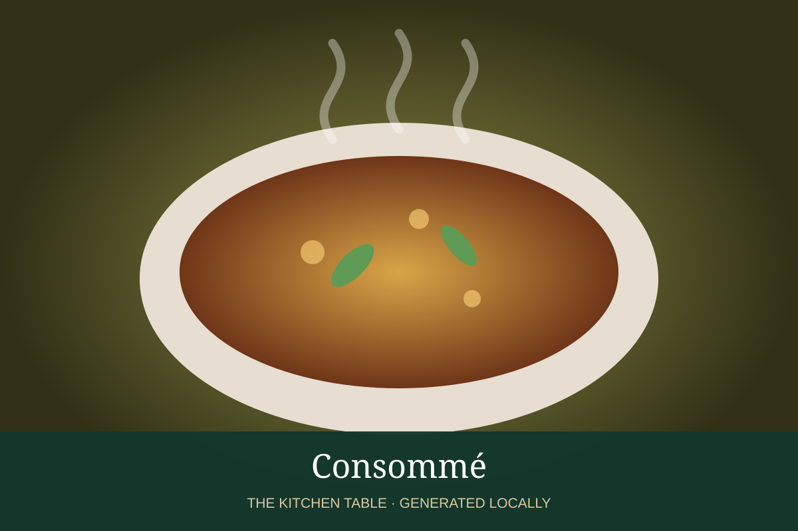

← Back to all recipes
BROTH & STOCK · FRENCH
Consommé
Crystal-clear clarified meat broth made with a traditional egg-white raft.
Broth & StockFrench

Ingredients
- 2 qt well-flavored cold beef or chicken broth
- 1 lb lean ground meat matching broth
- 4 egg whites
- 1 onion, minced
- 1 carrot, minced
- 1 celery rib, minced
- 1 tomato, chopped
Preparation
- Mix cold broth with meat, egg whites, and vegetables.
- Heat slowly while stirring until the raft begins to form.
- Stop stirring; barely simmer 45–60 minutes, making a small opening in the raft.
- Ladle clear liquid through the opening and strain through damp cheesecloth.